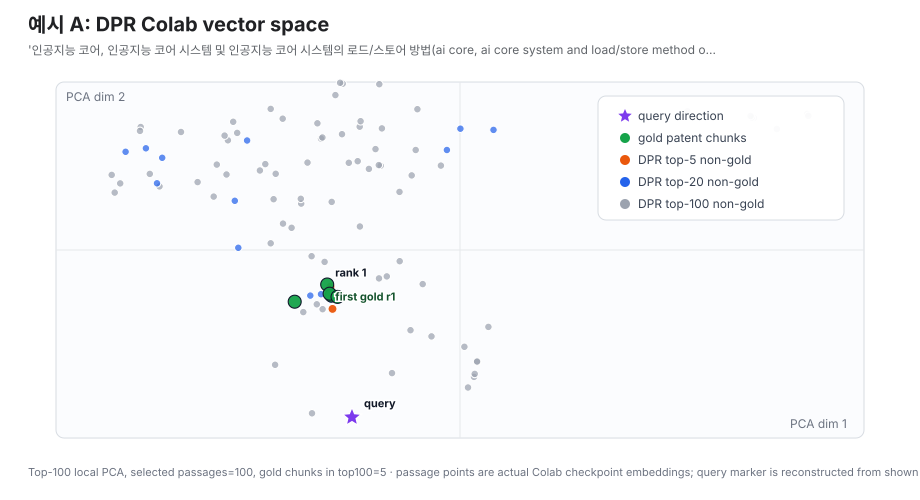
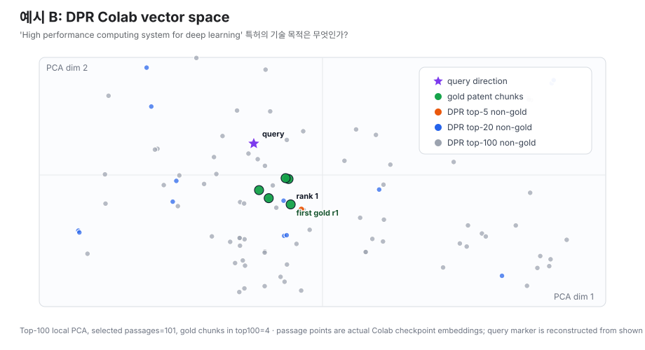
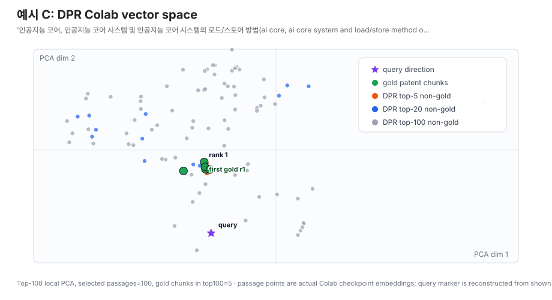
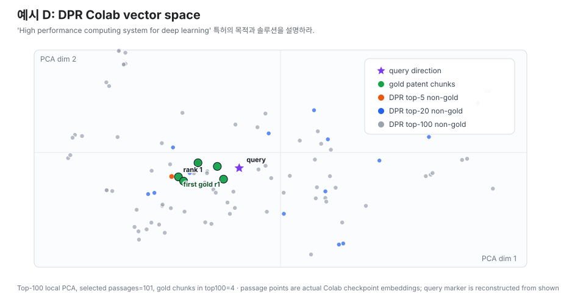

특허 데이터 기반 DPR Retrieval 실험 보고서
AI 시스템 반도체 특허 CSV를 DPR 논문 구조에 맞춰 passage retrieval 문제로 변환하고, BM25와 DPR bi-encoder retrieval 성능을 gold patent_id hit rate 기준으로 비교했다.
본 보고서는 파인튜닝 전 DPR을 별도로 실행해 DPR zero-shot 기준선으로 기록했다.
로컬 Apple Silicon에서 검증용으로 수행한 1% sampled local fine-tuning 결과는
초기 fine-tuning 관측치로 분리했다. 전체 train split으로 1 epoch fine-tuning한 결과는
DPR full fine-tuned 행에 반영했다. Colab Pro A100 run은 현재 로컬에 확보된
checkpoint 중 dev NLL 기준 최선인 dpr_biencoder.1을 우선 평가해
DPR Colab Pro checkpoint 1 행으로 추가했다.
본 실험은 DPR 논문의 retriever 학습 구조와 Top-k retrieval evaluation을 따른다.
다만 원 논문의 gold answer는 사람이 라벨링한 QA answer string인 반면,
본 특허 데이터에는 human-labeled QA가 없으므로 gold label은 patent_id 기준으로 정의했다.
따라서 정답 판정은 answer exact match가 아니라 동일 특허 passage 검색 성공 여부로 계산한다.
1. 실험 요약
graphrag_text를 140-token chunk로 분할
80/10/10은 DPR 논문이 고정한 비율이 아니라, 이 특허 CSV에 공식 benchmark split이 없어서 적용한 실험 설계다.
DPR 논문은 Natural Questions, TriviaQA 등 기존 QA 데이터셋의 train/dev/test split을 사용해 평가한다.
따라서 본 실험에서는 논문 구조인 bi-encoder, in-batch negative, hard negative, Top-k retrieval 평가는 따르되,
데이터 분할은 특허 단위로 새로 만들었다. 같은 특허가 train과 test에 동시에 들어가는 leakage를 막기 위해
query 단위가 아니라 patent_id 단위로 먼저 나눈 뒤, 각 특허에서 목적/해결수단/목적+솔루션 질문을 생성했다.
DPR run별 실험 조건 요약
| Run | 학습 데이터 | Batch / Epoch | Negatives | 평가 checkpoint / 비고 |
|---|---|---|---|---|
| DPR zero-shot | 파인튜닝 없음 | - | - | bert-base-multilingual-cased 초기 encoder로 전체 passages.tsv embedding 생성 후 test 1,995 queries 평가 |
| DPR 1% sampled fine-tuned | train split 약 1% | batch=2, epoch=1, grad acc 1 |
hard_negatives=1 |
로컬 Apple Silicon/MPS smoke run. 성능 확인용 sampled checkpoint |
| DPR full local | 전체 train split 15,948 queries |
batch=2, dev batch=4, epoch=1, grad acc 1 |
hard_negatives=1 |
outputs/patent_dpr_local_full/dpr_biencoder.0. 로컬 MPS 제약 때문에 작은 batch 사용 |
| DPR Colab Pro checkpoint 1 | 전체 train split 15,948 queries |
batch=128, effective 128, epoch=40, grad acc 1 |
hard_negatives=1 |
A100 80GB, sequence_length=256, fp16=False. 로컬 확보 checkpoint 0-4 중 dev NLL 기준 최선인 dpr_biencoder.1 평가 |
Passage corpus에 들어간 컬럼
DPR의 passages.tsv는 id TAB text TAB title 형식이다.
이 실험에서 id는 patent_id::chunk_xxx, title은
원본 CSV의 발명의 명칭, text는 graphrag_text를 chunking한 값이다.
질문/정답 생성에는 별도로 AI요약(목적), AI요약(솔루션),
AI요약(목적+솔루션)을 사용했다. 즉 passage는 명칭만 쓴 것이 아니라,
명칭은 title field로 들어가고 본문은 graphrag_text 전체를 사용했다.
| DPR field | 원본 CSV 컬럼 / 포함 내용 |
|---|---|
id |
patent_id 기반. 예: 2025-0016785::chunk_000 |
title |
발명의 명칭. DPR context encoder는 title insertion을 켜서 title과 text를 함께 인코딩한다. |
text |
graphrag_text. 내부에는 특허ID, 발명의 명칭, 중분류/소분류, IPC/CPC, 출원인/권리자, 국가/국적, 출원일/출원연도, 법적상태, 기술 목적, 해결수단, 목적+솔루션 요약, 요약, 대표청구항, 국책과제 정보가 라벨 형태로 포함된다. |
| QA answer source | AI요약(목적), AI요약(솔루션), AI요약(목적+솔루션). 이 컬럼들은 passage 파일의 별도 column은 아니고, train/dev/test query의 정답 문장 생성에 사용했다. |
2. Table 2 형태의 Retrieval Accuracy
| Method | Top-5 | Top-10 | Top-20 | Top-50 | Top-100 | 비고 |
|---|---|---|---|---|---|---|
| BM25 | 92.18 | 94.94 | 96.24 | 97.74 | 98.65 | 동일 corpus, 동일 test split |
| DPR zero-shot | 0.10 | 0.25 | 0.45 | 1.00 | 2.56 | 파인튜닝 전 pretrained mBERT bi-encoder |
| DPR 1% sampled fine-tuned | 0.20 | 0.60 | 1.00 | 2.66 | 5.56 | 로컬 MPS 검증용 1% sampling run |
| DPR full fine-tuned | 87.22 | 91.88 | 95.99 | 98.60 | 99.40 | 전체 train split, 1 epoch local run |
| DPR Colab Pro checkpoint 1 | 98.30 | 99.10 | 99.55 | 99.90 | 100.00 | A100 actual batch 128, 확보 checkpoint 0-4 중 dev NLL 최선 |
| BM25+DPR Colab RRF | 98.40 | 99.25 | 99.55 | 99.90 | 100.00 | BM25와 DPR Colab Pro checkpoint 1을 weighted RRF로 결합, DPR weight α=0.9 |
수치는 held-out test split 1,995 queries에 대해 Top-k 안에 같은 patent_id의 passage가
하나라도 있으면 hit로 계산한 accuracy다. BM25+DPR은 새 학습 없이 BM25 rank와 DPR Colab rank를 결합한 rank fusion 결과다.
따라서 Top-100 = 100%는 모든 Top-100 passage가 정답이라는 뜻이 아니라,
모든 test query에서 Top-100 안에 정답 특허 passage가 최소 1개 이상 들어갔다는 뜻이다.
Top-k Retrieval Accuracy Line Plot
BM25+DPR RRF는 Top-5에서 DPR Colab Pro checkpoint 1보다 +0.10 point 높고, Top-50부터 99.90% 이상에 도달한다.
DPR-only Top-k Retrieval Accuracy Line Plot
같은 0-100% y축을 사용했다. DPR 내부 비교만 보면 full local에서 retrieval objective가 크게 학습되고, Colab Pro checkpoint 1에서 Top-5까지 98% 이상으로 올라간다.
DPR 초기 단계 비교: zero-shot vs 1% sampled
이 그래프는 차이를 보기 위해 y축을 0-6%로 확대했다. 1% sampled fine-tuning은 zero-shot보다 개선되지만, 아직 retrieval objective를 충분히 학습하지 못한 상태다.
DPR 본 학습 비교: full local vs Colab Pro checkpoint 1
이 그래프는 차이를 보기 위해 y축을 80-100%로 확대했다. Colab Pro checkpoint 1은 특히 Top-5에서 local full 대비 +11.08 point 높다.
3. 실험 예시
아래 예시는 실제 test split에서 가져온 query다. 평가는 생성형 답변의 exact match가 아니라,
검색된 Top-k passage 중 같은 gold patent_id를 가진 passage가 하나라도 있으면 hit로 계산한다.
각 예시는 본문에서 query, 정답, Top-k hit 여부를 제시하고, method × Top-k 조합의 실제 passage 목록은 별도 상세 페이지에 예시별 30개 행씩 분리했다.
예를 들어 BM25+DPR Colab RRF Top-100에서 예시 A는 100개 중 정답 특허 chunk가 5개,
예시 B는 4개이며, 예시 C/D도 같은 방식으로 하나 이상의 gold passage가 있으면 Top-100 hit로 계산된다.
정답 특허는 사람이 새로 라벨링한 값이 아니라 원본 CSV row의 patent_id다.
질문과 정답 답변은 전처리 스크립트가 자동 생성했다. 예를 들어 purpose 질문은
발명의 명칭으로 질문 문장을 만들고, 정답 답변은 같은 row의
AI요약(목적) 컬럼을 사용한다. 따라서 예시 A/B의 정답 답변은 DPR이나 BM25가 만든 문장이 아니라
patent_rawdata.csv에 이미 들어 있던 AI 요약 컬럼에서 온 pseudo answer다.
실제 사용 질문 예시
다음 질문들은 data/patent/test.tsv와 test_metadata.jsonl에 들어간 실제 held-out test query다.
BM25와 DPR 모두 같은 질문으로 검색했고, 아래에는 ID 대신 실제 질문과 정답 답변 문장을 표시했다.
| question_type | 실제 질문 | 정답 답변 |
|---|---|---|
purpose |
'인공지능 코어, 인공지능 코어 시스템 및 인공지능 코어 시스템의 로드/스토어 방법(ai core, ai core system and load/store method of ai core system)' 특허의 기술 목적은 무엇인가? |
인공지능 코어 시스템을 제공하기 위해, 외부 인터페이스와의 밴드위스를 효율적으로 극대화한다. |
solution |
'인공지능 코어, 인공지능 코어 시스템 및 인공지능 코어 시스템의 로드/스토어 방법(ai core, ai core system and load/store method of ai core system)' 특허는 어떤 해결수단을 제안하는가? |
인공지능 코어, 인공지능 코어 시스템 및 인공지능 코어 시스템의 로드/설치 방법이 개시된다. 인공지능 코어는 인풋 활성화 및 웨이트를 수신하여 2차원 매트릭스 연산을 통해 아웃풋 활성화를 생성하는 프로세싱 유닛, 외부 인터페이스를 통해 수신된 프로그램 및 입력 데이터를 온 칩 버퍼로 전달하고, 온 칩 버퍼로부터 외부 인터페이스로 출력 데이터를 전달하는 로드/설치 작업을 수행한다. |
purpose_solution |
'인공지능 코어, 인공지능 코어 시스템 및 인공지능 코어 시스템의 로드/스토어 방법(ai core, ai core system and load/store method of ai core system)' 특허의 목적과 솔루션을 설명하라. |
[목적] 인공지능 코어 시스템을 제공하기 위해, 외부 인터페이스와의 밴드위스를 효율적으로 극대화한다. [솔루션] 인공지능 코어는 인풋 활성화 및 웨이트를 수신하여 2차원 매트릭스 연산을 통해 아웃풋 활성화를 생성하고, 현재 작업에 대한 메인 로드/설치 작업과 이후 작업에 대한 대기 로드/설치 작업을 포함한다. |
purpose |
'High performance computing system for deep learning' 특허의 기술 목적은 무엇인가? |
가속기가 데이터를 처리할 때 호스트 메모리를 사용하지 않고 신속하게 데이터를 처리할 수 있는 컴퓨팅 시스템을 제공한다. |
Vector space 시각화
아래 4개 그림은 DPR Colab Pro checkpoint 1의 실제 passage embedding을 PCA로 2차원 축소한 것이다.
초록색은 같은 gold patent_id passage, 빨간색 X는 query embedding, 회색/파란색 점은 검색 후보 passage를 나타낸다.
예시 A: 인공지능 코어 purpose

purpose query에서 Colab DPR이 정답 특허 chunk를 query 근처에 배치하는지 확인한다.
예시 B: 고성능 딥러닝 컴퓨팅 purpose

영문 특허명 기반 purpose query에서 gold passage와 유사 제목 passage가 함께 모이는 패턴을 보여준다.
예시 C: 인공지능 코어 solution

solution query에서 로드/스토어 및 온 칩 버퍼 관련 gold passage가 상위권에 놓이는지 확인한다.
예시 D: 고성능 딥러닝 컴퓨팅 purpose+solution

목적과 솔루션을 함께 묻는 복합 query에서 Colab DPR의 검색 공간 배치를 보여준다.
예시 A: 인공지능 코어 특허 Top-k 검색 결과 비교
| 항목 | 내용 | ||||||||||||||||||||||||||||||||||||||||||||||||||||||||
|---|---|---|---|---|---|---|---|---|---|---|---|---|---|---|---|---|---|---|---|---|---|---|---|---|---|---|---|---|---|---|---|---|---|---|---|---|---|---|---|---|---|---|---|---|---|---|---|---|---|---|---|---|---|---|---|---|---|
| Query | '인공지능 코어, 인공지능 코어 시스템 및 인공지능 코어 시스템의 로드/스토어 방법' 특허의 기술 목적은 무엇인가? |
||||||||||||||||||||||||||||||||||||||||||||||||||||||||
| 정답 특허 | 인공지능 코어, 인공지능 코어 시스템 및 인공지능 코어 시스템의 로드/스토어 방법 | ||||||||||||||||||||||||||||||||||||||||||||||||||||||||
| 정답 답변 | 인공지능 코어 시스템을 제공하기 위해, 외부 인터페이스와의 밴드위스를 효율적으로 극대화한다. | ||||||||||||||||||||||||||||||||||||||||||||||||||||||||
| 상세 검색 내용 |
본문 가독성을 위해 6개 method × Top-5/10/20/50/100의 전체 passage 목록은 별도 상세 페이지로 분리했다. 이 표는 실제 retrieval output을 그대로 사용하며, Top-100 행은 100개 passage를 모두 포함한다. |
||||||||||||||||||||||||||||||||||||||||||||||||||||||||
| Top-k별 답변 가능 여부 |
|
||||||||||||||||||||||||||||||||||||||||||||||||||||||||
| 판정 | zero-shot과 1% sampled는 Top-100 안에서도 정답을 찾지 못했다. local full은 Top-5에서 정답을 찾았고, Colab Pro checkpoint 1은 rank 1에 정답 passage를 올렸다. |
예시 B: 고성능 딥러닝 컴퓨팅 특허 Top-k 검색 결과 비교
| 항목 | 내용 | ||||||||||||||||||||||||||||||||||||||||||||||||||||||||
|---|---|---|---|---|---|---|---|---|---|---|---|---|---|---|---|---|---|---|---|---|---|---|---|---|---|---|---|---|---|---|---|---|---|---|---|---|---|---|---|---|---|---|---|---|---|---|---|---|---|---|---|---|---|---|---|---|---|
| Query | 'High performance computing system for deep learning' 특허의 기술 목적은 무엇인가? |
||||||||||||||||||||||||||||||||||||||||||||||||||||||||
| 정답 특허 | High performance computing system for deep learning | ||||||||||||||||||||||||||||||||||||||||||||||||||||||||
| 정답 답변 | 가속기가 데이터를 처리할 때 호스트 메모리를 사용하지 않고 신속하게 데이터를 처리할 수 있는 컴퓨팅 시스템을 제공한다. | ||||||||||||||||||||||||||||||||||||||||||||||||||||||||
| 상세 검색 내용 |
본문 가독성을 위해 6개 method × Top-5/10/20/50/100의 전체 passage 목록은 별도 상세 페이지로 분리했다. 이 표는 실제 retrieval output을 그대로 사용하며, Top-100 행은 100개 passage를 모두 포함한다. |
||||||||||||||||||||||||||||||||||||||||||||||||||||||||
| Top-k별 답변 가능 여부 |
|
||||||||||||||||||||||||||||||||||||||||||||||||||||||||
| 판정 | zero-shot과 1% sampled는 Top-100 안에서도 정답을 찾지 못했다. local full은 Top-5에서는 miss지만 Top-10부터 정답을 찾았고, Colab Pro checkpoint 1은 Top-5 안에 정답 passage를 복수로 올렸다. |
예시 C: 인공지능 코어 특허 Solution 검색 결과 비교
| 항목 | 내용 | ||||||||||||||||||||||||||||||||||||||||||||||||||||||||
|---|---|---|---|---|---|---|---|---|---|---|---|---|---|---|---|---|---|---|---|---|---|---|---|---|---|---|---|---|---|---|---|---|---|---|---|---|---|---|---|---|---|---|---|---|---|---|---|---|---|---|---|---|---|---|---|---|---|
| Query | '인공지능 코어, 인공지능 코어 시스템 및 인공지능 코어 시스템의 로드/스토어 방법(ai core, ai core system and load/store method of ai core system)' 특허는 어떤 해결수단을 제안하는가? |
||||||||||||||||||||||||||||||||||||||||||||||||||||||||
| 정답 특허 | 인공지능 코어, 인공지능 코어 시스템 및 인공지능 코어 시스템의 로드/스토어 방법(ai core, ai core system and load/store method of ai core system) | ||||||||||||||||||||||||||||||||||||||||||||||||||||||||
| 정답 답변 | 인공지능 코어, 인공지능 코어 시스템 및 인공지능 코어 시스템의 로드/설치 방법이 개시된다. 인공지능 코어는 인풋 활성화 및 웨이트를 수신하여 2차원 매트릭스 연산을 통해 아웃풋 활성화를 생성하는 프로세싱 유닛, 외부 인터페이스를 통해 수신된 프로그램 및 입력 데이터를 온 칩 버퍼로 전달하고, 온 칩 버퍼로부터 외부 인터페이스로 출력 데이터를 전달하는 로드/설치 작업을 수행한다. 로드/설치 작업은 프로세싱 유닛에 의해 현재 수행되는 현재 작업에 대한 메인 로드/설치 작업 및 프로세싱 유닛에 의해 현재 작업 이후에 수행되는 대기 작업에 대한 대기 로드/설치 작업을 포함한다. | ||||||||||||||||||||||||||||||||||||||||||||||||||||||||
| 상세 검색 내용 |
본문 가독성을 위해 6개 method × Top-5/10/20/50/100의 전체 passage 목록은 별도 상세 페이지로 분리했다. 이 표는 실제 retrieval output을 그대로 사용하며, Top-100 행은 100개 passage를 모두 포함한다. |
||||||||||||||||||||||||||||||||||||||||||||||||||||||||
| Top-k별 답변 가능 여부 |
|
||||||||||||||||||||||||||||||||||||||||||||||||||||||||
| 판정 | zero-shot과 1% sampled는 Top-100 안에서도 정답을 찾지 못했다. local full은 rank 2에서 정답을 찾았고, Colab Pro checkpoint 1은 rank 1에 정답 passage를 올렸다. BM25+DPR RRF는 rank 1에서 정답을 회수했다. |
예시 D: 고성능 딥러닝 컴퓨팅 특허 Purpose+Solution 검색 결과 비교
| 항목 | 내용 | ||||||||||||||||||||||||||||||||||||||||||||||||||||||||
|---|---|---|---|---|---|---|---|---|---|---|---|---|---|---|---|---|---|---|---|---|---|---|---|---|---|---|---|---|---|---|---|---|---|---|---|---|---|---|---|---|---|---|---|---|---|---|---|---|---|---|---|---|---|---|---|---|---|
| Query | 'High performance computing system for deep learning' 특허의 목적과 솔루션을 설명하라. |
||||||||||||||||||||||||||||||||||||||||||||||||||||||||
| 정답 특허 | High performance computing system for deep learning | ||||||||||||||||||||||||||||||||||||||||||||||||||||||||
| 정답 답변 | [목적] 가속기가 데이터를 처리할 때 호스트 메모리를 사용하지 않고 신속하게 데이터를 처리할 수 있는 컴퓨팅 시스템을 제공한다. [솔루션] 컴퓨팅 시스템은 호스트 프로세서, 통신 인터페이스에 기초하여 호스트 프로세서와 통신하는 복수의 가속기들, 그리고 상호 연결 네트워크를 통해 복수의 가속기들과 연결되는 복수의 메모리 노드들을 포함한다. 복수의 가속기들 중 제1 가속기와 복수의 메모리 노드들 중 제1 메모리 노드 사이에 제1 데이터 링크가 설정되고, 제1 가속기와 복수의 메모리 노드들 중 제2 메모리 노드 사이에 제2 데이터 링크가 설정된다. | ||||||||||||||||||||||||||||||||||||||||||||||||||||||||
| 상세 검색 내용 |
본문 가독성을 위해 6개 method × Top-5/10/20/50/100의 전체 passage 목록은 별도 상세 페이지로 분리했다. 이 표는 실제 retrieval output을 그대로 사용하며, Top-100 행은 100개 passage를 모두 포함한다. |
||||||||||||||||||||||||||||||||||||||||||||||||||||||||
| Top-k별 답변 가능 여부 |
|
||||||||||||||||||||||||||||||||||||||||||||||||||||||||
| 판정 | zero-shot과 1% sampled는 Top-100 안에서도 정답을 찾지 못했다. local full은 rank 9에서 정답을 찾았고, Colab Pro checkpoint 1은 rank 1에 정답 passage를 올렸다. BM25+DPR RRF는 rank 1에서 정답을 회수했다. |
예시 B/D처럼 질문에 특허명이 직접 들어가면 BM25는 제목과 표면 키워드 일치만으로 높은 순위를 만들 수 있다. zero-shot과 1% sampled DPR은 retrieval 목적함수에 충분히 맞춰지지 않아 무관한 신경망/AI 특허를 먼저 올린다. local full은 의미적으로 가까운 deep learning hardware 특허를 먼저 올리는 케이스가 남지만, Colab Pro checkpoint 1처럼 batch 128과 40 epoch 조건에 가까워지면 정답 passage가 Top-5로 회복된다.
GPT-5.5 xhigh 보조 검증
아래 판정은 GPT-5.5 xhigh가 각 method의 Top-5 snippet만 보고 질문에 답한 뒤, 그 답변이 정답 답변을 지지하는지 판단한 결과다. 이 검증은 공식 retrieval accuracy를 대체하지 않고, 검색 결과가 실제 답변 근거로 충분한지 확인하는 정성 보조 분석으로만 사용한다.
| Case A: 인공지능 코어 로드/스토어 특허의 기술 목적 | |||
|---|---|---|---|
| Method | GPT 답변 | 판정 | 이유 |
| BM25 | 외부 인터페이스와의 밴드위스를 효율적으로 극대화하는 것이다. | Supported | 스니펫에 gold와 동일한 기술 목적이 직접 제시되어 있다. |
| DPR zero-shot | 스니펫만으로는 해당 특허의 기술 목적을 도출할 수 없다. | Unsupported | 외부 인터페이스 밴드위스나 로드/스토어 관련 근거가 없다. |
| DPR 1% sampled fine-tuned | 인공지능 가속기의 데이터 처리 효율을 개선하는 것으로 보인다. | Partial | 가속기 효율 관련 단서는 있으나 gold의 외부 인터페이스 밴드위스 목적은 없다. |
| DPR local full | 외부 인터페이스와의 밴드위스를 효율적으로 극대화하는 것이다. | Supported | 기술 목적 문장이 직접 포함되어 있고 관련 구조 설명도 뒷받침한다. |
| DPR Colab Pro checkpoint 1 | 외부 인터페이스와의 밴드위스를 효율적으로 극대화하는 것이다. | Supported | 기술 목적과 로드/스토어 구조가 명시되어 충분히 답할 수 있다. |
| BM25+DPR Colab RRF | 외부 인터페이스와의 밴드위스를 효율적으로 극대화하는 것이다. | Supported | rank fusion 후에도 정답 passage가 rank 1에 있어 충분히 답할 수 있다. |
| Case B: High performance computing system for deep learning 특허의 기술 목적 | |||
|---|---|---|---|
| Method | GPT 답변 | 판정 | 이유 |
| BM25 | 호스트 메모리를 사용하지 않고 가속기가 데이터를 신속하게 처리할 수 있는 컴퓨팅 시스템을 제공하는 것이다. | Supported | gold와 같은 기술 목적이 직접 제시되어 있다. |
| DPR zero-shot | 스니펫만으로는 해당 특허의 기술 목적을 도출할 수 없다. | Unsupported | 대부분 무관한 기술이며 호스트 메모리 미사용 근거가 없다. |
| DPR 1% sampled fine-tuned | 딥러닝 가속 기술의 성능과 효율성을 개선하는 것이다. | Partial | 딥러닝 가속 성능 개선 단서는 있으나 호스트 메모리 미사용 목적은 없다. |
| DPR local full | 딥러닝 가속기 시스템의 전력 소비와 전력 할당을 최적화하는 것이다. | Unsupported | 전력 관리 관련 내용만 있고 gold의 데이터 처리 목적과 다르다. |
| DPR Colab Pro checkpoint 1 | 호스트 메모리를 사용하지 않고 데이터를 신속하게 처리할 수 있는 컴퓨팅 시스템을 제공하는 것이다. | Supported | 기술 목적이 직접 포함되어 있고 시스템 구성 설명도 일치한다. |
| BM25+DPR Colab RRF | 호스트 메모리를 사용하지 않고 데이터를 신속하게 처리할 수 있는 컴퓨팅 시스템을 제공하는 것이다. | Supported | rank fusion 후에도 정답 passage가 rank 1에 있어 충분히 답할 수 있다. |
원본 판정 기록: outputs/patent_dpr_llm_judge/gpt55_xhigh_example_judgments.md.
전체 test set에 이 방식을 적용하려면 각 query의 Top-k snippet을 LLM에 넣어야 하므로 비용과 시간이 별도로 발생한다.
4. 데이터 변환 방식
patent_rawdata.csv에서 특허 row를 읽고 결측 본문을 제외한다.
graphrag_text를 기본 본문으로 사용하고 긴 문서는 chunking한다.
patent_id passage 검색 여부를 측정한다.
생성 파일
data/patent/passages.tsv: DPR context 형식id TAB text TAB titledata/patent/train.json: DPR bi-encoder 학습 데이터data/patent/dev.json: DPR dev 데이터data/patent/test.tsv: retrieval 평가용 question-answer TSVdata/patent/bm25_results.json: BM25 baseline 및 hard negative mining 결과
5. DPR 학습 구조
DPR은 question encoder와 passage encoder를 별도로 두는 bi-encoder 구조다.
현재 설정은 한국어와 영어가 섞인 특허명을 고려해 bert-base-multilingual-cased를 사용했다.
DPR 논문의 in-batch negative 학습 구조는 그대로 유지했다.
Q = [q1, q2, ..., qB] in R^(B x d) P = [p1+, p2+, ..., pB+] in R^(B x d) S = QP^T in R^(B x B)
score matrix S의 대각선이 positive pair다. 같은 batch 안의 다른 passage는 in-batch negative가 된다.
BM25 hard negative를 하나씩 추가하면 passage 행렬은 다음처럼 확장된다.
P = [p1+, h1, p2+, h2, ..., pB+, hB] in R^(2B x d) S = QP^T in R^(B x 2B)
각 question row에서 정답 positive passage 위치를 맞히도록 cross entropy를 최소화한다.
Q 행렬과 In-batch Negative 예시
아래는 Colab Pro checkpoint 1의 batch_size=128 학습 구조를 기준으로 그린 예시다.
data/patent/train.json에서 가져온 실제 학습 샘플 중 q1-q3만 펼쳐 보여주고,
q4부터 q127은 생략했다. 정확한 runtime batch 순서는 shuffle 때문에 로그에 남아 있지 않으므로,
여기서는 실제 train row의 질문, positive passage, BM25 hard negative를 사용해 batch 128 구조를 설명한다.
Batch 128 중 실제 train sample 예시
실제 학습 행렬은 Q in R^(128 x 768)이다. 위 목록은 그중 q1-q3의 실제 질문과
positive/hard negative 내용을 보여주는 발췌다.
Score matrix: S = QP^T 128 x 128
| S | p1+ 뉴럴 처리 |
p2+ 데이터 처리 |
p3+ 행렬 곱셈 |
... | p128+ |
|---|---|---|---|---|---|
| q1 뉴럴 처리 |
positive | in-batch neg | in-batch neg | ... | in-batch neg |
| q2 데이터 처리 |
in-batch neg | positive | in-batch neg | ... | in-batch neg |
| q3 행렬 곱셈 |
in-batch neg | in-batch neg | positive | ... | in-batch neg |
| ... | ... | ... | ... | ... | ... |
| q128 | in-batch neg | in-batch neg | in-batch neg | ... | positive |
실제 BM25 hard negative를 1개씩 붙인 경우
각 question마다 train data에 저장된 BM25 hard negative h를 추가하면 batch 128의 passage 후보가
[p1+, h1, p2+, h2, ..., p128+, h128]로 확장된다. 아래 표는 전체
128 x 256 score matrix 중 q1-q3와 q128, 그리고 일부 column만 펼친 것이다. 이 실제 샘플에서는
h2가 p3+와 같은 passage이고, h3는 q2의 positive 특허와 같은 계열이다.
즉 BM25 hard negative는 모델에 강한 구분 신호를 주지만, 특허 데이터에서는 near-positive에 가까운 어려운 negative도 포함한다.
| S | p1+ 뉴럴 처리 |
h1 유사 뉴럴 처리 |
p2+ 데이터 처리 |
h2 행렬 곱셈 |
p3+ 행렬 곱셈 |
h3 데이터 처리 |
... | p128+ | h128 |
|---|---|---|---|---|---|---|---|---|---|
| q1 뉴럴 처리 |
positive | hard neg | in-batch neg | hard neg | in-batch neg | hard neg | ... | in-batch neg | hard neg |
| q2 데이터 처리 |
in-batch neg | hard neg | positive | hard neg p3와 동일 |
in-batch neg | hard neg | ... | in-batch neg | hard neg |
| q3 행렬 곱셈 |
in-batch neg | hard neg | in-batch neg | hard neg p3와 동일 |
positive | hard neg q2 계열 |
... | in-batch neg | hard neg |
| ... | ... | ... | ... | ... | ... | ... | ... | ... | ... |
| q128 | in-batch neg | hard neg | in-batch neg | hard neg | in-batch neg | hard neg | ... | positive | hard neg |
Colab Pro checkpoint 1의 학습 조건은 batch_size=128, hard_negatives=1이므로
실제 score matrix는 128 x 256이다. 표에서는 가독성을 위해 q4-q127과 중간 passage column을 생략했다.
Q/P/S 전체 시각화: BM25 hard negative 포함 batch 128
DPR Colab Pro checkpoint 1 학습은 batch_size=128, hard_negatives=1,
bert-base-multilingual-cased hidden size d=768 조건으로 돌렸다.
따라서 실제 학습 step에서 question 행렬은 Q in R^(128 x 768)이고,
passage 후보는 각 question의 positive 1개와 BM25 hard negative 1개를 합친
[p1+, h1, p2+, h2, ..., p128+, h128]이다. 이 기준의 score matrix는
S = QPT in R^(128 x 256)이다.
128 x 768
각 row는 실제 patent question embedding이다. 예: q1은 뉴럴 프로세싱 장치의 목적 질문,
q2는 데이터 처리 장치의 목적 질문, q3는 행렬 곱셈 데이터 처리 방법의 목적 질문이다.
768 x 256
passage 후보는 [p1+, h1, p2+, h2, ..., p128+, h128]이다.
위 실제 샘플 기준으로 p1+는 뉴럴 프로세싱 장치, h1은 유사 뉴럴 프로세싱 장치,
p2+는 데이터 처리 장치, h2는 행렬 곱셈 데이터 처리 passage다.
128 x 256
각 row의 초록 대각선 위치가 정답 positive passage다. 나머지 positive passage들은
in-batch negative, h 열은 BM25 hard negative로 작동한다.
128 x 128이지만,
DPR 논문의 최종 학습 설정과 본 실험처럼 BM25 hard negative 1개를 question마다 추가하면
실제 학습 score matrix는 128 x 256이다. 이 행렬의 정답 column index는
context 순서 [p1+, h1, p2+, h2, ..., p128+, h128]에서
0-based 기준 [0, 2, 4, ..., 254]다.
6. 현재 결과 해석
-
질문에 특허명이 그대로 들어간다.
예를 들어
'반도체 칩 기반 온디바이스 추론 가속 장치' 특허의 기술 목적은 무엇인가?처럼발명의 명칭이 query에 통째로 포함된다. passage에도 같은 발명의 명칭이 들어 있으므로, 상당 부분은 제목 매칭만으로도 풀린다. BM25가 Top-592.18까지 나오는 핵심 이유다. -
Corpus 규모가 작다.
본 실험의 passage corpus는
30,809개다. DPR 논문의 Wikipedia corpus는 약2,100만passage 규모이므로, 후보 수가 약680~700배적다. 후보가 적을수록 정답 passage가 Top-k 안에 들어올 확률은 높아진다. -
한 특허당 chunk가 여러 개다.
6,645개 특허를 140-token chunk로 나눠30,809개 passage를 만들었기 때문에, 평균적으로 특허 하나당 약4~5개 chunk가 있다. Top-100을 뽑으면 같은gold patent_id의 chunk가 하나라도 걸릴 가능성이 커진다. -
질문이 템플릿 기반이다.
질문 유형은
purpose,solution,purpose_solution세 가지 고정 패턴이다. Natural Questions처럼 사람이 자유롭게 쓴 다양한 질문이 아니라, 모델이 학습해야 할 질문 구조가 제한적이다. -
Passage에 구조화된 메타데이터가 포함되어 있다.
graphrag_text에는 특허ID, 발명의 명칭, IPC/CPC, 기술 목적, 해결수단이 라벨 형태로 들어간다. 검색 단서가 풍부하므로 sparse retrieval과 dense retrieval 모두 높은 Top-k 수치를 얻기 쉬운 조건이다.
따라서 실험 자체가 잘못된 것은 아니지만, “DPR이 BM25를 이겼다”고 일반화하기에는
현재 task 난이도가 낮다는 점을 함께 기록해야 한다. DPR 논문에서 dense retrieval의 가치가 크게 드러나는 지점은
lexical matching만으로 잡기 어려운 의미적 질문을 처리할 때다. 본 설정에서는 BM25만으로도 Top-5
92.18이 나오므로, dense retrieval의 필요성이 약하게 보이는 구조다.
BM25가 강하게 나온 이유
- 질문에 특허명과 핵심 키워드가 직접 포함되어 lexical matching에 유리하다.
- passage에도 특허ID, 발명의 명칭, IPC/CPC, 목적, 해결수단이 함께 들어간다.
- 이 데이터 구성에서는 단어 일치 기반 검색만으로도 gold patent_id를 매우 잘 찾는다.
- 전문용어, 장치명, 공정명처럼 표면형 단어가 중요한 특허 검색에서는 BM25의 sparse matching이 Top-5 정렬에 강하다.
DPR이 Top-5에서 밀린 이유
- 파인튜닝 전 mBERT encoder는 question-passage retrieval 목적함수로 정렬되어 있지 않다.
- mBERT 임베딩이 특허 도메인 문장과 긴 한국어 요약 retrieval에 아직 맞춰지지 않았다.
- fine-tuning 후에도 의미적으로 비슷한 반도체 특허가 많아 정확한 gold 특허가 Top-5 밖으로 밀리는 사례가 있다.
- 로컬 full 학습은 batch size 2라 큰 in-batch negative 효과가 제한적이었지만, Colab Pro checkpoint 1은 batch size 128로 이 한계를 크게 줄였다.
DPR이 약한 모델이라는 뜻은 아니다. 실제로 full fine-tuning 후 DPR은 Top-20에서 BM25와 거의 같은 수준이고, Top-100에서는 BM25보다 높다. 즉 정답 특허를 넓은 후보군 안에는 잘 넣지만, 현재 질문이 특허명을 직접 포함하므로 Top-5의 세밀한 순위화에서는 BM25가 더 유리한 실험 구조다.
전체 train split 1 epoch 학습 후 DPR은 Top-5 87.22, Top-20 95.99,
Top-100 99.40까지 상승했다. BM25 대비 Top-5는 낮지만, Top-20은 거의 같은 수준이고
Top-100에서는 DPR이 더 높게 측정됐다.
A100 80GB에서 actual batch_size=128로 학습한 checkpoint 중 현재 로컬에 확보된
dpr_biencoder.0부터 dpr_biencoder.4 중 dev NLL이 가장 낮은
dpr_biencoder.1을 평가했다. Top-5 98.30, Top-20 99.55,
Top-100 100.00으로 BM25와 local DPR을 모두 상회했다.
7. Fine-tuning 실행 기록
DPR zero-shot을 파인튜닝 전 기준선으로 두고, 전체 train split 15,948 queries로
1 epoch fine-tuning을 수행했다. 비교 기준은 동일한 corpus, 동일한 test split, 동일한 Top-k,
동일한 gold patent_id hit rate로 유지했다.
수행한 순서
train_sampling_rates=[1.0], batch size 2, 1 epoch로 full local fine-tuning을 수행했다.- best validation checkpoint
dpr_biencoder.0를 저장했다. - 새 checkpoint로 전체
passages.tsvembedding을 다시 생성했다. - 동일한
test.tsv와test_metadata.jsonl로 Top-100 retrieval 결과를 평가했다. - Table 2에 DPR full fine-tuned 결과를 반영했다.
Fine-tuning 실행 조건
| 항목 | 값 |
|---|---|
| 실행 환경 | Local Apple Silicon, CUDA 미사용, PYTORCH_ENABLE_MPS_FALLBACK=1 |
| Encoder | bert-base-multilingual-cased, hf_bert, do_lower_case=False |
| Sequence length | 256 |
| Train data | data/patent/train.json, full train split 15,948 queries, train_sampling_rates=[1.0] |
| Training validation | data/patent/local_dev.json, 24-query local dev subset |
| Final evaluation | data/patent/test.tsv와 test_metadata.jsonl, 1,995 test queries |
| Batch size | batch_size=2, dev_batch_size=4, gradient_accumulation_steps=1 |
| Epoch / steps | num_train_epochs=1, 총 7,974 training steps |
| Optimizer settings | learning_rate=2e-5, warmup_steps=10, weight_decay=0.0, max_grad_norm=2.0 |
| Negatives | hard_negatives=1, other_negatives=0, DPR in-batch negatives 사용 |
| Training result | dev NLL loss 0.782419, dev correct ratio 12/24 = 0.50, epoch average loss 0.187410 |
| Checkpoint | outputs/patent_dpr_local_full/dpr_biencoder.0 |
| Embedding / retrieval | passage embedding batch size 16, retrieval batch size 16, n_docs=100 |
In-batch negative 관점의 로컬/Colab 차이
로컬 full fine-tuning은 batch size가 2이므로 한 step의 question 행렬은 Q in R^(2 x d)이고,
positive만 쓰면 S = QP^T는 2 x 2 score matrix가 된다. hard negative를 1개씩 붙여도
비교 후보는 P in R^(4 x d), 즉 S in R^(2 x 4) 수준이다. 반면 Colab Pro checkpoint 1은
batch_size=128, hard_negatives=1이므로 S in R^(128 x 256)에서 학습했다.
이 차이가 zero-shot, 1% sampled, local full 대비 Colab Pro checkpoint 1의 Top-5 회복을 설명하는 핵심 조건이다.
현재 산출물 위치
outputs/patent_dpr_local_sampled/table2_patent_retrieval.mdoutputs/patent_dpr_local_sampled/table2_dpr_topk.mdoutputs/patent_dpr_local_full/table2_patent_retrieval.mdoutputs/patent_dpr_local_full/table2_dpr_topk.mdoutputs/patent_dpr_local_full/dpr_eval_summary.jsonoutputs/patent_dpr_local_full/dpr_eval_summary_topk.jsonoutputs/patent_dpr_local_full/dpr_results.jsonoutputs/patent_dpr_local_full/dpr_biencoder.0outputs/patent_dpr_zero_shot/table2_patent_retrieval.mdoutputs/patent_dpr_zero_shot/table2_dpr_topk.mdoutputs/patent_dpr_zero_shot/dpr_eval_summary.jsonoutputs/patent_dpr_zero_shot/dpr_eval_summary_topk.jsonoutputs/patent_dpr_local_sampled/dpr_eval_summary.jsonoutputs/patent_dpr_local_sampled/dpr_eval_summary_topk.jsonoutputs/patent_dpr_local_sampled/dpr_results.jsonoutputs/patent_dpr_local_sampled/dpr_biencoder.0outputs/patent_dpr_colab_pro/table2_dpr_colab.mdoutputs/patent_dpr_colab_pro/table2_dpr_colab_topk.mdoutputs/patent_dpr_colab_pro/dpr_eval_summary.jsonoutputs/patent_dpr_colab_pro/dpr_eval_summary_topk.jsonoutputs/patent_dpr_colab_pro/dpr_results.jsonoutputs/patent_dpr_colab_pro/patent_passages_colab_0outputs/patent_dpr_colab_pro/dpr_biencoder.1outputs/patent_dpr_hybrid_rrf/table2_bm25_topk.mdoutputs/patent_dpr_hybrid_rrf/table2_bm25_dpr_colab_rrf_alpha09.mdoutputs/patent_dpr_hybrid_rrf/bm25_dpr_colab_rrf_alpha09_eval_summary_topk.jsonoutputs/patent_dpr_hybrid_rrf/bm25_dpr_colab_rrf_alpha09_results.jsonDPR-main/PATENT_DPR_EXPERIMENT.md
8. Colab Pro 재학습 및 평가 기록
Colab Pro에서 NVIDIA A100-SXM4-80GB가 배정됐고,
batch_size=128, gradient_accumulation_steps=1,
effective batch size=128, fp16=False 조건으로 학습했다.
목표는 40 epoch였지만 epoch 30 이후 DPR의 average-rank validation 경로에서 device mismatch가 발생해
run metadata는 failed로 남았다. 그러나 checkpoint는 정상 저장됐고, 현재 로컬에 확보한
checkpoint 0-4 중 dev NLL 최선인 dpr_biencoder.1을 먼저 평가했다.
Colab 실행 파일
colab/patent_dpr_colab_pro.ipynb: VSCode Colab 커널 또는 Colab UI에서 실행할 notebookcolab/colab_runner.py: smoke test, batch feasibility check, full training 실행 스크립트colab/COLAB_STEPS.md: Drive 업로드와 실행 절차tools/create_colab_bundle.py: 기존 checkpoint와 outputs를 제외한 clean bundle 생성tools/verify_colab_artifacts.py: Colab 산출물 로컬 검증
Colab full training 기록 항목
| 항목 | 기록할 값 |
|---|---|
| GPU | NVIDIA A100-SXM4-80GB, VRAM 81920MB |
| Batch | actual batch_size=128, gradient_accumulation_steps=1, effective 128 |
| 평가 checkpoint | outputs/patent_dpr_colab_pro/dpr_biencoder.1, 확보 checkpoint 0-4 중 dev NLL 최선 |
| Run status | 학습 checkpoint는 저장됐지만 epoch 30 average-rank validation에서 실패해 metadata status는 failed |
| 후처리 | 로컬 MPS에서 passage embedding, dense retrieval, gold patent_id Top-5/20/100 평가 수행 |
| 결과 | Top-5 98.30, Top-20 99.55, Top-100 100.00 |